측량기능사 (2004-10-10 기출문제)
1과목: 임의 구분
1. 인공위성을 이용한 범세계적 위치 결정의 체계로 정확히 위치를 알고 있는 위성에서 발사한 전파를 수신하여 관측점까지의 소요시간을 측정함으로써 관측점의 3차원 위치를 구하는 측량은 다음 중 어느 것인가?
- 전자파 거리 측량
- 광파 거리 측량
- GPS 측량
- 육분의 측량
(정답률: 90%)

2. 평판을 미지점에 세우고 도면상에 그 위치가 알려져 있는 두 개 이상의 기지점들을 시준하여 방향선의 교차에 의하여 도면상에서 미지점의 위치를 구하는 방법은 다음 중 어느 것인가?
- 전진법
- 전방 교회법
- 후방 교회법
- 측방 교회법
(정답률: 24%)
3. 각 측량에서 기포관의 감도에 대한 정의로 옳은 것은?
- 트랜싯의 연직축에 직각으로 장치되어 있으면서 수평 각을 측정할 때 사용된다.
- 시준선을 정하기 위하여 접안렌즈의 초점에 고정되어있다.
- 기포가 기포관의 1눈금만큼 이동하는데 기울여야 하는 기포관의 각도를 초수로 표시한 값이다.
- 대물렌즈에서 맺은 상을 확대하여 보는 값이다.
(정답률: 41%)
4. 망원경 시준선의 표고로 기준면으로부터 기계의 시준선까지의 높이는?
- 지반고
- 기계고
- 중간점
- 이기점
(정답률: 65%)
5. 평판을 측점에 세울 때의 3조건이 아닌 것은?
- 정준
- 표정
- 이심
- 구심
(정답률: 71%)
6. 평판측량의 폐합 트래버스에서 폐합오차의 배분은? (단, 오차가 허용한도내에 있을 때)
- 각의 크기에 비례하여 배분한다.
- 변의 크기에 반비례하여 배분한다.
- 각의 크기에 반비례하여 배분한다.
- 변의 크기에 비례하여 배분한다.
(정답률: 31%)
7. 평판측량의 장· 단점중 옳지 않은 것은?
- 기계가 간단하므로 숙달이 잘되면 빠르게 작업할 수 있다.
- 내업이 다른 측량보다 많다.
- 우천시 작업이 불가능하다.
- 흐린 날씨에 습기로 인한 도지의 신축으로 오차발생의 위험이 있다.
(정답률: 53%)
8. 표준 길이보다 2cm가 짧은 20m짜리 줄자로 테니스장의 면적을 재었더니 600m2가 되었다. 그렇다면 이 테니스장을 표준자로 잰다면 몇 m2가 되겠는가?
- 598.8m2
- 599.4m2
- 600.4m2
- 601.4m2
(정답률: 27%)
9. 평판을 세울 때 측량 결과에 가장 큰 영향을 주는 오차는 어느 것인가?
- 수평맞추기 오차
- 이심맞추기 오차
- 방향맞추기 오차
- 중심맞추기 오차
(정답률: 76%)
10. 트랜싯측량에서 기계취급의 주의사항 중 옳지 않은 것은?
- 기계운반시 되도록 수직으로 세운다.
- 기계운반시 고정나사는 가볍게 잠근다.
- 시준시 포올(pole)은 되도록 윗쪽을 시준한다.
- 기계는 오랫동안 직사광선에 노출되지 않도록 한다.
(정답률: 36%)
11. 수준측량의 분류에서 측량 목적에 따른 분류에 해당되지 않은 것은?
- 기본 수준측량
- 고저차 수준측량
- 단면 수준측량
- 표면 수준측량
(정답률: 38%)
12. 주곡선 간격의 1/2 간격에 긴 파선으로 나타내는 등고선의 종류는?
- 계곡선
- 간곡선
- 조곡선
- 보조곡선
(정답률: 52%)
13. 방위가 S 23° 20′ W 일 때 방위각은?
- 23° 20′
- 113° 20′
- 156° 40′
- 203° 20′
(정답률: 49%)
14. 수준측량의 성과가 그림과 같을 때 A점의 표고는? (단, B.M 표고는 30m 임.)
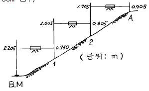
- 31.525m
- 31.255m
- 33.255m
- 34.525m
(정답률: 46%)
15. A, B 두점간의 고저차를 구하기 위하여 그림과 같이 I, II, 및 III의 노선을 지나는 직접수준측량을 실시하였다. 최확값은 얼마인가? (단, I= 18.346m, II= 18.352m, III= 18.340m)
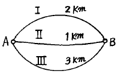
- 18.332m
- 18.340m
- 18.348m
- 18.356m
(정답률: 50%)
16. 토탈스테이션의 장점이 아닌 것은?
- 인공위성을 이용하므로 정확하다.
- 사용자가 필요에 따라 정보를 입력한다.
- 레코드 모듈(record module)에 성과값을 저장, 기록할 수 있다.
- 컴퓨터와 카드 리더(card reader)를 이용할 수 있다.
(정답률: 76%)
17. 트래버스 측량에서 전체 측선의 길이가 424m 이고 위거오차 30cm, 경거오차 -30cm 일 때 트래버스 측량의 정밀도는 약 얼마인가?
- 1/1,000
- 1/2,000
- 1/3,000
- 1/5,000
(정답률: 33%)
18. 임의의 기준선으로부터 어느 측선까지 시계 방향으로 잰각을 무엇이라 하는가?
- 방향각
- 방위각
- 연직각
- 천정각
(정답률: 64%)
19. 그림에서 AB 측선의 방위각 70° 이고, B점에서 편각 80°를 얻었다. 이때 BC 측선의 방위각을 계산한 값은?
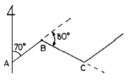
- 80°
- 150°
- 170°
- 210°
(정답률: 37%)
20. 삼각점의 선점시 주의해야 할 사항이 아닌 것은?
- 삼각형 내각의 크기는 30° ∼ 120° 의 범위가 되도록 한다.
- 삼각점 상호간에 시준이 잘 되고 기상의 영향을 받지않는 곳이어야 한다.
- 지반이 견고하고 이동침하가 없는 곳이 좋다.
- 거리에는 무관하나 되도록 측점수가 많은 것이 좋다.
(정답률: 67%)
2과목: 임의 구분
21. 아래 삼각망에서 기선 AC = 40.598m 일 때 BC 측선의 길이는 얼마인가? (단, ∠A = 39° 13' 40" , ∠B = 104° 19' 30", ∠C = 36° 26' 50")
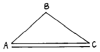
- 19.327m
- 26.498m
- 30.596m
- 64.532m
(정답률: 43%)
22. 고저차가 2m인 두 점을 기선으로 측정한 결과 경사거리 400m의 값을 얻었다면 경사 보정량은?
- -0.4mm
- -0.5mm
- -5.0mm
- -6.0mm
(정답률: 26%)
23. BC측선의 위거와 경거의 값으로 옳은 것은? (단, 측선 BC의 거리는 10m임) (순서대로 위거, 경거)
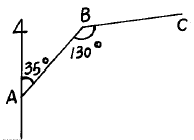
- 0.43m, 5.96m
- 0.67m, 8.86m
- 0.77m, 6.96m
- 0.87m, 9.96m
(정답률: 18%)
24. 트래버스 측량의 폐합오차 조정에서 트랜싯 법칙을 적용하는 경우는?
- 오차를 각 측선 길이에 비례하여 배분할 때 적용한다.
- 각 측량의 정밀도가 거리 측량의 정밀도보다 높을 때 적용한다.
- 각 측량의 정밀도와 거리 측량의 정밀도가 동일할 때 적용한다.
- 각을 1'독으로 1배각 관측하고, 변을 30m 쇠줄자로 1cm까지 측정할 경우에만 적용한다.
(정답률: 36%)
25. 그림과 같이 삼각형 ABC의 토지를 변 BC에 평행한 선분 DE로서 면적 m:n가 2:3이 되게 분할 하고자 한다. 이때 선분 AD의 길이는?
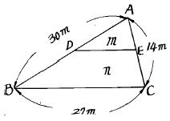
- 19.254m
- 18.974m
- 20.000m
- 18.520m
(정답률: 47%)
26. 삼각망의 조정을 위한 조건 중 "삼각형 내각의 합은 180° 이다."의 설명과 관계가 깊은 것은?
- 측점 조건
- 각 조건
- 변 조건
- 기선 조건
(정답률: 75%)
27. 표준길이보다 3cm가 긴 30m의 테이프로 거리를 측정하여 510m를 얻었다. 이 거리의 정확한 값은?
- 510.51m
- 509.49m
- 515.10m
- 510.49m
(정답률: 32%)
28. 다음 중 수평위치 결정에 관한 측량과 거리가 먼 것은?
- 삼각 측량
- 트래버스 측량
- 수준 측량
- 삼변 측량
(정답률: 37%)
29. 다음 그림과 같이 수준측량을 하여 b1=1.666m, b2=1.555m, a1=1.887m, a2=1.778m 의 결과를 얻었다. 두점간의 고저차는 얼마인가?
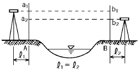
- 0.217m
- 0.111m
- 0.227m
- 0.222m
(정답률: 42%)
30. 세부 도근점을 결정하기 위한 방법으로 한 곳에서 많은 점의 시준이 안 될 때나 길고 좁은 지역의 측량에 이용되는 평판 측량 방법은?(오류 신고가 접수된 문제입니다. 반드시 정답과 해설을 확인하시기 바랍니다.)
- 방사법
- 전진법(도선법)
- 교회법
- 후방교회법
(정답률: 61%)
31. 우리나라의 삼각점이 소속되어 있는 좌표계의 표시이다. 서부원점 좌표계는?
- 동경 129° , 북위38°
- 동경 127° , 북위38°
- 동경 125° , 북위38°
- 동경 124° , 북위38°
(정답률: 48%)
32. 동일 측점수에 비하여 피복 면적이 가장 넓기 때문에 광대한 지역의 측량에 적당한 삼각망은?
- 사변형망
- 유심삼각망
- 단삼각망
- 단열삼각망
(정답률: 60%)
33. A점의 좌표가 XA=50m, YA=100m 이고 AB의 거리가 1000m, AB의 방위각이 60° 일 때 B점의 좌표는?
- XB = 550m , YB = 966m
- XB = 966m , YB = 550m
- XB = 916m , YB = 966m
- XB = 600m , YB = 916m
(정답률: 53%)
34. 삼각측량에서 1개 삼각형의 각 점을 같은 정도로 관측하여 생긴 폐합 오차의 처리는?
- 각의 크기에 비례하여 배분한다.
- 각의 크기에 반비례하여 배분한다.
- 대변의 크기에 비례하여 배분한다.
- 3등분하여 똑같이 배분한다.
(정답률: 44%)
35. 축척 1/5000의 평판측량에서 도상의 오차를 0.2mm까지 허용할 때, 측점의 편심량인 구심오차는 얼마인가?
- 10cm
- 20cm
- 50cm
- 80cm
(정답률: 17%)
36. 지형을 표시하는데 가장 기본이 되는 등고선은?
- 간곡선
- 주곡선
- 조곡선
- 계곡선
(정답률: 73%)
37. 등고선의 간격에 대한 설명이다. 옳게 설명한 것은?
- 계곡선은 가는 실선으로 표시하며 간곡선 간격의 10배이다.
- 주곡선을 굵은 실선으로 표시하며 기본이 되는 곡선 이다.
- 간곡선은 파선으로 표시하며 주곡선 간격의 2. 3. 이다.
- 조곡선은 점선으로 표시하며 간곡선 간격의 2배이다.
(정답률: 38%)
38. 삼변법에 의하여 면적을 계산하는 공식은? (단, 삼각형 세변의 길이를 각각 a, b, c로 가정)
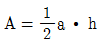
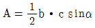
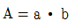
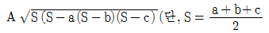
(정답률: 63%)
39. 노선측량에서 단곡선 설치시 반지름(R)=100, 교각(I)=60° 30'일 때 접선장(T.L)을 계산한 값은?
- 10.1973m
- 22.3747m
- 44.1973m
- 58.3180m
(정답률: 34%)
40. 광축이 수평선과 거의 일치하도록 지상에서 촬영한 사진은?
- 항공사진
- 수직사진
- 수평사진
- 경사사진
(정답률: 62%)
3과목: 임의 구분
41. 노선측량의 작업 순서로 알맞은 것은?
- 도상 계획 → 예측 → 공사 측량 → 실측
- 도상 계획 → 실측 → 예측 → 공사 측량
- 도상 계획 → 예측 → 실측 → 공사 측량
- 예측 → 도상 계획 → 실측 → 공사 측량
(정답률: 69%)
42. 동일한 사진기를 이용하여 사진측량을 실시할 때 촬영고도에 따른 촬영면적의 변화에 대한 설명으로 알맞은 것은?
- 촬영고도에 비례한다.
- 촬영고도에 반비례한다.
- 촬영고도의 제곱에 비례한다.
- 촬영고도의 제곱에 반비례한다.
(정답률: 45%)
43. 가로 10m, 세로 10m의 정사각형 토지에 기준면으로부터 각 꼭지점의 높이의 측정 결과가 그림과 같을 때 전토량은?
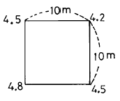
- 225m3
- 450m3
- 900m3
- 1,250m3
(정답률: 59%)
44. 단곡선을 설치할 때 교각(I)가 38° 20', 반지름(R)이 300m이면 중앙종거(M1)는?
- 16.630m
- 4.187m
- 1.049m
- 0.262m
(정답률: 44%)
45. 양단면의 면적이 A1=65m2, A2=27m2, 정중앙의 단면적이 Am=45m2이고 길이 L=30m일 때, 각주 공식에 의한 체적은?
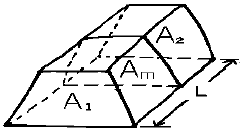
- 1,060m3
- 1,260m3
- 1,360m3
- 2,040m3
(정답률: 41%)
46. 2변의 길이가 각각 45.5m, 35.5m이고 그 사이 각이 119° 19′ 인 삼각형의 면적은?
- 704.19m2
- 754.50m2
- 793.22m2
- 450.10m2
(정답률: 38%)
47. 세오돌라이트를 이용하는 측량에 비해 사진 측량의 장점이 아닌 것은?
- 접근이 곤란한 대상을 측정 가능하다.
- 동체 측정이 가능하다.
- 촬영을 위한 시설비용 등의 부대비용이 적게 든다.
- 축척변경이 용이하다.
(정답률: 47%)
48. 1/25,000 지형도에서의 등고선 간격 중 주곡선의 간격은?
- 10m
- 20m
- 50m
- 100m
(정답률: 42%)
49. 경계선을 3차 포물선으로 보고, 지거의 세 구간을 한 조로 하여 면적을 구하는 방법은?
- 심프슨 제 1 법칙
- 심프슨 제 2 법칙
- 심프슨 제 3 법칙
- 심프슨 제 4 법칙
(정답률: 50%)
50. 등고선의 성질의 설명 중에서 옳은 것은?
- 등고선은 폐합하지 않는다.
- 등경사 지면에 대한 등고선의 간격은 같다.
- 경사가 급한 곳에는 간격이 넓어진다.
- 등고선의 간격은 산꼭대기와 산 밑에서는 작고 산 중턱에서 크다.
(정답률: 40%)
51. 측량법의 용어 정의에 관한 설명중 옳지 않은 것은?
- 일반측량이란 기본측량 외의 측량을 말한다.
- 측량 계획 기관이란 기본측량 및 공공측량에 관한 계획을 수립하는 자이다.
- 측량작업기관이란 측량계획기관의 지시 또는 위임에 의해 측량에 관한 작업을 실시하는 자이다.
- 측량 성과란 당해측량에서 얻은 최종 결과이다.
(정답률: 42%)
52. 측량성과의 고시에 포함되어야 할 사항이 아닌 것은?
- 측량의 규모
- 측량성과의 보관장소
- 측량실시의 시기 및 지역
- 측량실시자의 성명
(정답률: 24%)
53. 기본측량의 측량성과와 측량기록 사본의 교부를 받고자 하는 경우에 대한 설명으로 옳은 것은?
- 건설교통부장관에게 신청하여야 한다.
- 국토지리정보원장에게 신청하여야 한다.
- 측량협회장에게 신청하여야 한다.
- 지방국토관리청장에게 신청하여야 한다.
(정답률: 49%)
54. 일반측량을 공공측량으로 지정할 수 없는 것은?
- 측량노선의 길이가 10km 이상인 수준측량
- 국토지리정보원장이 발행하는 지도의 축척과 동일한 축척의 지도제작
- 측량실시 지역의 면적이 1km2미만인 지형측량
- 촬영지역의 면적이 1km2이상인 측량용 사진의 촬영
(정답률: 37%)
55. 기본측량으로서의 삼각점 및 수준점 등 측지기준점의 측량 등을 그 업무내용으로 하는 측량업은?
- 일반 측량업
- 소규모 측량업
- 측지 측량업
- 연안조사 측량업
(정답률: 50%)
56. 다음 사항 중 측량업의 등록취소 사유나 영업정지 사유로 잘못된 것은?
- 고의로 인하여 측량을 부정확하게 한 때
- 과실로 인하여 측량을 부정확하게 한 때
- 규정에 의한 등록기준에 미달하게 된 때
- 정당한 사유없이 계속하여 6개월 이상 휴업 한 때
(정답률: 38%)
57. 다음 중 가장 무거운 벌칙에 해당 되는 것은?
- 측량업자가 경쟁입찰에서 다른업자와 미리 공모하여 조작된 가격으로 입찰한 경우
- 정당한 사유없이 측량의 실시를 방해한 경우
- 부정한 방법으로 측량업의 등록을 한 경우
- 측량업의 등록증을 대여한 경우
(정답률: 47%)
58. 측량심의회의 심의 사항이 아닌 것은?
- 측량기술의 연구발전에 관한 사항
- 기본측량에 관한 계획의 수립 및 실시에 관한 사항
- 측량도서의 발간
- 회원의 품위 보전을 위한 사항
(정답률: 39%)
59. 측량표중 설치자의 이름을 명시할 필요가 없는 것은?
- 기선표석
- 측표
- 표기
- 방위표석
(정답률: 21%)
60. 중앙지명위원회의 구성에 대한 설명으로 옳은 것은?
- 위원장 및 부위원장을 포함하지 아니한 19인 이내
- 위원장 및 부위원장 각 1인을 포함한 17인 이내
- 위원장 및 부위원장 각 1인을 포함한 20인 이내
- 위원장 및 부위원장을 포함하지 아니한 15인 이내
(정답률: 54%)